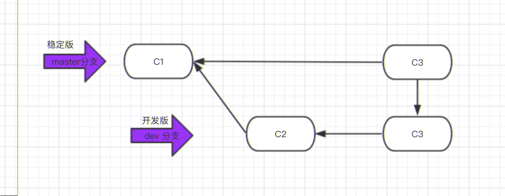
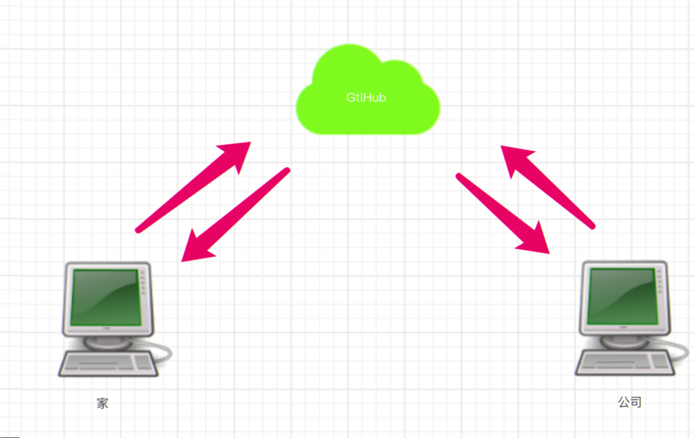
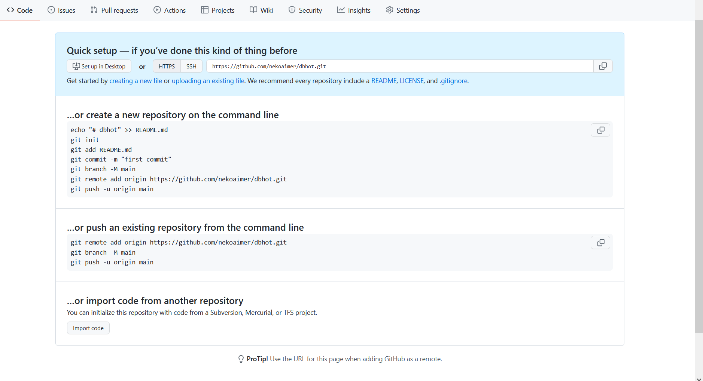

# 第一章 快速入门
# 什么是 Git
# 为什么要做版本控制
# 安装 GIT
- 详见：https://git-scm.com/book/zh/v2 / 起步 - 安装 - Git
# 第二章 东北热 创业史
# 第一阶段：单枪匹马开始干
| git status |
| |
| 注：新增的文件和修改过后的文件都是红色 |
| git add xxx(文件名) |
| git add . 所有文件 |
| git config --global user.email "you@example |
| git config --global user.name "Your Name" |
# 第二阶段：拓展新功能
| git add |
| git commit -m '短视频’ |
# 第三阶段：“约饭事件”
| git log |
| git reset --hard 版本号 |
| git reflog |
| git reset --hard 版本号 |
| git init |
| git add |
| git commit |
| git log |
| git reflog |
| git reset --hard 版本号 |

# 第四阶段：商城 & 紧急修复 bug
# 分支
- 分支可以给使用者提供多个环境的可以，意味着你可以把你的工作从开发主线上分离开来，以免影响开 发主线。
# 紧急修复 bug 方案

# 命令总结
| git merge 要合并的分支 |
| |
| 注意：切换分支再合并 |
# 工作流

# 第五阶段：进军三里屯
- 有钱之后就要造呀，一个人在三里屯买了一层楼做办公室。

# 第一天上班在家上传代码
- 首先，需要注册 github 账号，并创建远程仓库，然后再执行如下命令，将代码上传到 github。


| 1. 给远程仓库起别名 |
| git remote add origin 远程仓库地址 |
| |
| 2.创建分支 |
| git branch -M 分支 |
| |
| 3. 向远程推送代码 |
| git push -u origin 分支 |
# 初次在公司新电脑下载代码
| 1.克隆远程仓库代码 |
| git clone远程仓库地址（内部已实现git remote add origin远程仓库地址） |
| 2.切换分支 |
| git checkout 分支 |
| 1.切换到dev分支进行开发 |
| git checkout dev |
| 2.把master分支合并到dev ［仅一次］ |
| git merge master |
| 3.修改代码 |
| 4.提交代码 |
| git add . |
| git commit -m 'xx' |
| git push origin dev |
# 下班回到家继续写代码
| 1.切换到dev分支进行开发 |
| git checkout dev |
| 2.拉代码 |
| git pull origin dev |
| 3.继续开发 |
| |
| 4.提交代码 |
| git add . |
| git commit -m 'xx' |
| git push origin dev |
# 到公司继续开发
| 1.切换到dev分支进行开发 |
| git checkout dev |
| 2.拉最新代码（不必再clone,只需要通过pull获取最新代码即可） |
| git pull origin dev |
| 3.继续开发 |
| |
| 4.提交代码 |
| git add . |
| git commit -m 'xx' |
| git push origin dev |
# 开发完毕，要上线
| 1.将dev分支合并到master,进行上线 |
| git checkout master |
| git merge dev |
| git push origin master |
| 2.把dev分支也推送到远程 |
| git checkout dev |
| git merge master |
| git push origin dev |
# 在公司约妹子忘记提交代码
| 1.拉代码 |
| git pull origin dev |
| 2.继续开发 |
| |
| 3.提交代码 |
| git add . |
| git commit -m 'xx' |
| |
| 注：忘记push 了 |
# 回家继续写代码
| 1.拉代码，发现在公司写的代码忘记提交... |
| git pull origin dev |
| |
| 2.继续开发其他功能 |
| |
| 3.把dev分支也推送到远程 |
| git add . |
| git commit -m 'xx' |
| git push origin dev |
# 到公司继续写代码
| 1.拉代码，把晚上在家写的代码拉到本地（有合并、可能产生冲突） |
| git pull origin dev |
| |
| 2.如果有冲突，手动解决冲突 |
| |
| 3.继续开发其他功能 |
| |
| 4.把dev分支也推送到远程 |
| git add . |
| git commit -m 'xx' |
| git push origin dev |
# 补充命令
| git pull origin dev |
| |
| 等价于 |
| git fetch origin dev // 拉到版本库 |
| git merge origin/dev // 更新到工作区 |

# rebase 的作用？

# 快速解决冲突
- 安装 beyond compare
- 在 git 中配置
| git config --local merge.tool bc3 |
| git config --local mergetool.path 'usr/local/bin/bcomp' |
| git config --local mergetool.keepBackup false |
- 3. 应用 beyond compare 解决冲突
# 小总结
| git pull origin dev |
| 等价于 |
| git fetch origin dev |
| git merge origin/dev |
| git log --graph --pretty=format:"%h %s |
# 第六阶段：多人协同开发工作流

# 创建项目 & 邀请成员
- 协同开发时，需要所有成员都可以对同一个项目进行操作，需要邀请成员并赋予权限，否则无法开发。 github 支持两种创建项目的方式（供多人协同开发）。
- 合作者，将用户添加到仓库合作者中之后，该用户就可以向当前仓库提交代码。

- 组织，将成员邀请进入组织，组织下可以创建多个仓库，组织成员可以向组织下仓库提交代码。

| git tag -a v1.0 -m ' 版本介绍' |
创建本地创建 Tag 信息 |
| git tag -d v1.0 |
删除 Tag |
| git push origin --tags |
将本地 tag 信息推送到远程仓库 |
| git pull origin --tags |
更新本地 tag 版本信息 |
| git checkout v.10 |
切换 tag |
| git clone -b v0.1 地址 |
指定 tag 下载代码 |
# 小弟开发
- 小弟注册 Github 或 Gitlab 账号
- 邀请小弟进入组织（默认对组织中的项目具有读权限）


| git clone https://github.com/oldboy-org/dbhot.git cd dbhot |
| git checkout dev |
| git checkout -b dzz |
| 写代码... |
| |
| git add . |
| git commit -m '斗地主功能开发完成' |
| git push origin ddz |
# code review
- 配置，代码 review 之后才能合并到 dev 分支。


# 提测上线（预发布）
| 1.基于dev分值创建release分值 |
| git checkout dev |
| git checkout -b release |
| |
| 2.测试等 |
| 3.合并到master |
| |
| 使用 pull request |
| 或 |
| 本地将release合并到master分支 |
| |
| 4.在master分支打tag |
| git tag -a v2 -m '第二版 斗地主功能’ |
| git push origin --tags |
| |
| 5.运维人员就可以去下载代码做上线了 |
| git clone -b v2 地址 |
# 第七阶段：给开源软件贡献代码
- fork 源代码将别人源代码拷贝到我自己的远程仓库。
- 在自己仓库进行修改代码
- 给源代码的作者提交修复 bug 的申请 (pull request)
# 第三章 其他
# 配置
| git config --local user.name '武沛齐' |
| git config --local user.email 'wupeiqi@xx.com |
| git config --global user.name 'wupeiq' |
| git config --global user.name 'wupeiqi@xx.com |
| git config --system user.name 'wupeiq' |
| git config --system user.name 'wupeiqi@xx.com' |
| 注意：需要有root权限 |
| git config --local user.name '武沛齐' |
| git config --local user.email 'wupeiqi@xx.com' |
| |
| git config --local merge.tool bc3 |
| git config --local mergetool.path '/usr/local/bin/bcomp' |
| git config --local mergetool.keepBackup false |
| |
| git remote add origin地址，默认添加在本地配置文件中（--local） |
# 免密码登录
| 原来的地址：https://github.com/WuPeiqi/dbhot.git |
| 修改的地址：https://用户名：密码@github.com/WuPeiqi/dbhot.git |
| |
| git remote add origin https://用户名：密码@github.com/WuPeiqi/dbhot.git git push origin master |
| 1.生成公钥和私钥（默认放在~/.ssh目录下，id_rsa.pub公钥、id_rsa私钥） |
| ssh-keygen |
| 2.拷贝公钥的内容，并设置到github中。 |
| 3.在git本地中配置ssh地址 |
| git remote add origin git@github.com:WuPeiqi/dbhot.git |
| 4.以后使用 |
| git push origin master |
# git 忽略文件
| *.h |
| ! a. h |
| fi les/ |
| *.py[c|a|d] |
- 更多参考：https://github.com/github/gitignore
# github 任务管理相关
- issues，文档以及任务管理
- wiki，项目文档
# 结课
- 感谢各位同学的关注和学习，希望 git 实战课程对你能够有所帮助，更多资源关注:
- 小猿圈 www.apeland.cn
- 路飞学城 www.luffycity.com
- 老男孩 IT 教育 www.oldboyedu.com